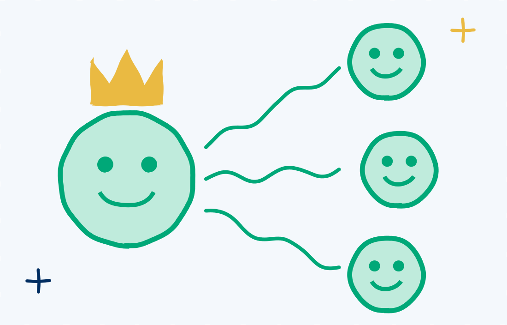
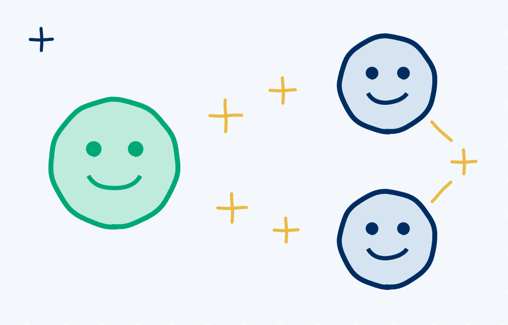

EQ Research
Are Emotions Contagious?
Short answer: yes. See for yourself. Click a smiley or a frownie on this team and watch the mood spread.
How to play
Click a smiley to spread joy or a frownie to spread stress. Faces with a gold star are leaders. Watch what happens when you click one.
Smiles: 0Frowns: 0
What’s going around
Four recent studies on how moods spread at work, from the cold to the cure.

Stress spreads through teams
In a survey of 237 employees across 41 teams, people on teams where moods spread easily reported a bigger drop in wellbeing under stress. On calmer teams, the same tendency went with better wellbeing.
Hernandez Grande et al., 2025, Journal of Management & Organization

Joy travels, even over video
In a lab study, 104 people who had never met were paired up on video calls and took turns describing a recent moment that made them happy, angry or sad. Listeners caught all three emotions, by their own report. But only joy showed on their faces, and the two people’s smiles tended to appear within seconds of each other. Anger and sadness spread too, but barely showed on camera.
At work: on a video call, a smile is one of the few emotions you can actually see land. A calm face doesn’t mean frustration or disappointment didn’t spread, so check in with words, not just faces.
Marx et al., 2025, Frontiers in Psychology

Leaders’ moods spread to their teams
Across 25 studies, leaders’ positive moods carried over to the people they lead, especially when those leaders were energizing and inspiring. That spread was linked to how effective leaders were and how well their teams performed. Moods passed most easily when leaders and team members were already on the same emotional wavelength.
Clarkson et al., 2020, European Journal of Social Psychology, review of 25 studies

Gratitude is a habit worth catching
When leaders said thank you, employees started noticing what coworkers did for them and saying thanks more often. Their working relationships got stronger, too. You don’t have to wait to catch it: notice one thing someone did for you today and say thank you.
Locklear, Kane & Ehrhart, 2026, Journal of Applied Psychology
Do people notice when they’ve caught something?
Our Emotional Intelligence Appraisal asks how often you recognize other people’s feelings, and how often you realize when someone else is influencing your own emotions.
don’t consistently notice when they’ve caught someone else’s mood.
Share who say they always or almost always do each
That 12-point gap matters. Spotting what someone else feels means looking outward. Noticing that their mood has become yours means looking inward, in the moment, while it’s happening. It’s the difference between seeing a coworker’s frustration in a meeting and realizing an hour later that you’ve been short with everyone since.
In other words, it’s easier to spot a cold going around than to notice you’ve caught one.
Noticing isn’t the same as handling it
Recognizing a feeling and managing it are two different skills. Saying you recognize other people’s feelings doesn’t mean you can keep their mood from taking over your own.
And these numbers are self-reports. Organizational psychologist Tasha Eurich found that most people believe they’re self-aware, but only 10% to 15% of the people she studied actually met the criteria (Harvard Business Review, 2018). So even more of us may be catching moods without realizing it.
Why does that matter? Because emotions don’t stay in your head. Neuroscientist Lisa Feldman Barrett explains that our brains help manage one another’s bodily resources, what she calls a body budget. A kind word or a steady presence can make a deposit, and a harsh exchange can make a withdrawal. That’s why some interactions leave you drained and others leave you restored (Barrett, 2020; TED Ideas excerpt).
Your check-up
Noticing is the first step. Knowing what to do next is the second.
Are you catching a cold, or taking your vitamin G?
That’s your immune system at work. Want to know how strong it is?
Take the EQ assessment →Keep exploring


TalentSmartEQ data: 731,369 Emotional Intelligence Appraisal self-assessments, 2021–2026. Items: “Realize when others influence your emotional state” and “Recognize other people’s feelings.”
Hernandez Grande, A., Farr-Wharton, B., Sharafizad, F., Darcy, S., & Gavin, M. (2025). Catching on: Work stress, employee wellbeing, and the moderating role of team-level emotional contagion. Journal of Management & Organization, 31(1), 346–359. doi.org/10.1017/jmo.2024.44
Marx, A. K. G., Sachs, D. F., Frenzel, A. C., & Schweizer, M. T. (2025). Emotional contagion in dyadic online video conferences: Empirical evidence based on self-report and facial expression data. Frontiers in Psychology, 16, 1546303. doi.org/10.3389/fpsyg.2025.1546303
Clarkson, B. G., Wagstaff, C. R. D., Arthur, C. A., & Thelwell, R. C. (2020). Leadership and the contagion of affective phenomena: A systematic review and mini meta-analysis. European Journal of Social Psychology, 50(1), 61–80. doi.org/10.1002/ejsp.2615
Locklear, L. R., Kane, M. E., & Ehrhart, M. G. (2026). Grateful leaders and attentive followers. Journal of Applied Psychology. doi.org/10.1037/apl0001398
Barrett, L. F. (2020). Seven and a Half Lessons About the Brain. Houghton Mifflin Harcourt. Excerpt: People’s words and actions can actually shape your brain, TED Ideas.
Gasper, K., Danube, C. L., & Hu, D. (2021). Making room for neutral affect: Evidence indicating that neutral affect is independent of and co-occurs with eight affective states. Motivation and Emotion, 45, 103–121. doi.org/10.1007/s11031-020-09861-3
Gasper, K., Hu, D., & Haynes, E. (2025). Feeling more neutral? Evaluative conditioning can increase neutral affective reactions. Cognition and Emotion, 39(3), 535–553. doi.org/10.1080/02699931.2024.2372385
Gasper, K., Spencer, L. A., & Hu, D. (2019). Does neutral affect exist? How challenging three beliefs about neutral affect can advance affective research. Frontiers in Psychology, 10, 2476. doi.org/10.3389/fpsyg.2019.02476
Eurich, T. (2018, January 4). What self-awareness really is (and how to cultivate it). Harvard Business Review. hbr.org/2018/01/what-self-awareness-really-is-and-how-to-cultivate-it
Copyright 2026 © TalentSmart Inc. All rights reserved.